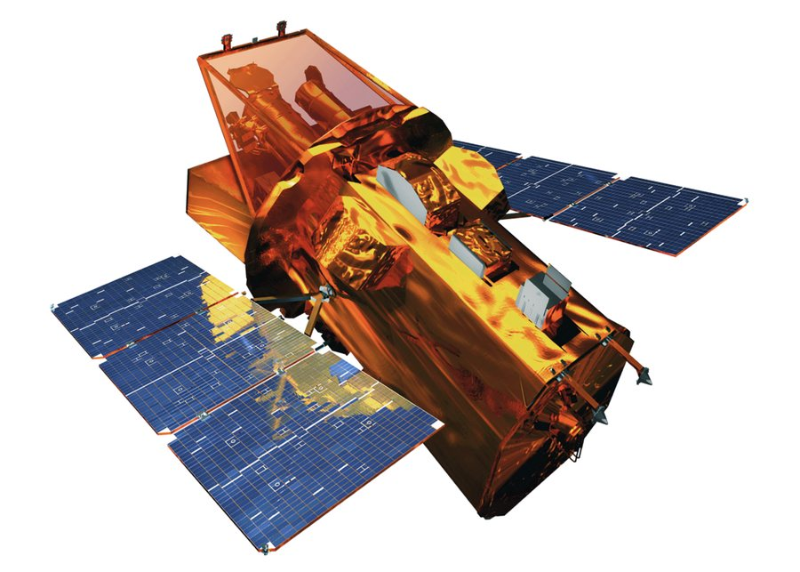
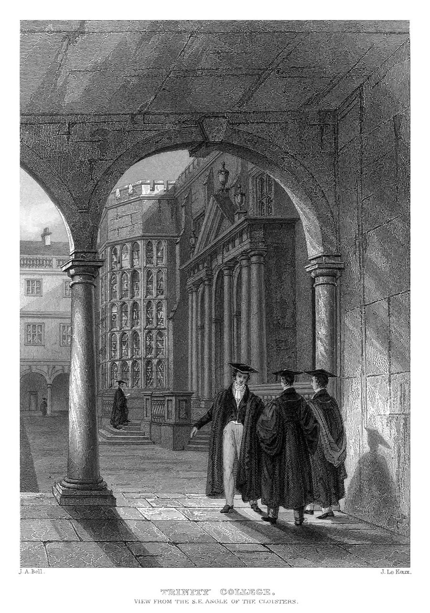

Москва · воскресеньеВыпуск из Москвы и из-под землиЦена: бесплатно
TheSéance Times
газета для тех, кто разговаривает с прошлым
№ 005 · 1 ноября 2026Пятый выпускЧтение: 14 минут
Небо · главное
Смерть без протокола
Swift отработал двадцать два года, две тысячи гамма-всплесков и семь тысяч статей — и падает. Спасательный аппарат подошёл на двенадцать километров и не смог; вход в атмосферу ждали в пятницу, а подтверждения до сих пор нет.
Событие — 20–31 октября 2026 · NASA, Пенсильванский университет, Космические силы США · 6 минут
Двадцатого октября обсерватория имени Нила Герелса Swift опустилась до 275 километров — это 171 миля, и в этих единицах число звучит как высота, а не как приговор. На такой орбите атмосфера уже не фон, а тормоз: спутник перестал компенсировать сопротивление, ушёл в безопасный режим, и команда из Пенсильванского университета отправила команду, которая фактически прекратила работу телескопа. Через три дня, 23 октября, NASA опубликовала короткую запись в блоге миссии: операции завершены, вход в атмосферу ожидается «в ближайшие недели».
Аппарат запустили 20 ноября 2004 года и рассчитывали на два года работы. Он отработал двадцать два: больше двух тысяч гамма-всплесков, более тысячи четырёхсот сверхновых, кометы, астероиды, чёрные дыры, обзор неба в рентгене и около семи тысяч опубликованных по его данным научных работ. Название дали за скорость: телескоп умел разворачиваться на вспышку за секунды, и именно поэтому его считали «первым ответчиком» для Hubble и Webb — те шли по его наводкам и смотрели глубже.
Дальше начинается история, ради которой это стоит читать. В сентябре 2025 года NASA заключила с компанией Katalyst Space из Аризоны контракт на 30 миллионов долларов: догнать стареющий телескоп, схватить его тремя роботизированными руками и поднять выше. На всё про всё — примерно год от чертежа до запуска. Аппарат LINK стартовал 3 июля с атолла Кваджалейн на ракете Pegasus XL. Через три недели у него начались проблемы с двигательной установкой и маховиками ориентации, он закрутился и потерял связь настолько, что инженеры неделями боролись за устойчивость.

Обсерватория Swift: служебный модуль в экранно-вакуумной изоляции, две трёхсекционные солнечные панели, наверху — три инструмента: BAT, XRT и UVOT. Рендер NASA / Sonoma State University, художник Aurore Simonnet. Общественное достояние, Wikimedia Commons.
Догнать получилось, схватить — нет. LINK подошёл к телескопу на 12–15 километров, снял его на камеру, отработал демонстрации двигателей и манипуляторов и 25 сентября сам вошёл в атмосферу. NASA официально закрыла своё участие в его миссии 3 сентября. Генеральный директор Katalyst Гхонхи Ли сформулировал итог без прикрас: «Мы не выполнили все задачи, которые ставили, но меньше чем за год прошли путь от концепции до запуска и управления первым коммерческим космическим роботом». Формально — правда. Практически — тридцать миллионов, год работы и двенадцать километров.
Что теперь падает
Когда попытку отменили, NASA включила науку обратно: в конце августа — два инструмента, 25 сентября — третий и автоматическое наведение. Это была честная попытка выжать из телескопа всё, что осталось, и она же ускорила падение: наблюдения требуют разворотов, развороты увеличивают сопротивление. Последние данные Swift собрал 20 октября.
По сообщению Associated Press от 31 октября, Космические силы США ожидают вход в атмосферу «в пятницу или около того» — то есть 30 октября плюс-минус. Большая часть аппарата сгорит. Но, по словам научного руководителя миссии Брэда Ченко, уцелеть могут детали из вольфрама — металла плотнее свинца — и часть элементов зеркала. Скорее всего обломки уйдут в океан, но в полосу входа попадают Африка, Австралия, Индия, Юго-Восточная Азия, Центральная и Южная Америка.
Запуск20 ноября 2004 года, расчётный срок — два года, фактически 22.
Последние данные20 октября 2026-го, на высоте 275 км, после чего — безопасный режим.
СпасениеКонтракт $30 млн, Katalyst Space; LINK стартовал 3 июля, ближайшее сближение 12–15 км, сам вошёл 25 сентября.
Прогноз входа30 октября «или около того» — по данным Космических сил США на 31 октября.
Что может долететьВольфрамовые детали и часть зеркала; остальное сгорит.
Факт: дата запуска, потолок орбиты на 20 октября, прекращение операций, дата и итоги попытки спасения, стоимость контракта, расстояние сближения, дата входа LINK в атмосферу, состав научного результата. Всё это есть в официальных публикациях NASA и в сообщении AP.
Обещание: сама дата входа. «В ближайшие недели» от 23 октября и «в пятницу или около того» от 31-го — это оценка, а не событие: в момент выпуска номера подтверждённого входа в атмосферу нет. Так же и с обломками: «могут уцелеть» и «скорее всего упадёт в океан» — вероятность, а не план. Чего нет: официального сообщения о том, что Swift вошёл в атмосферу, и координат падения.
Двадцать два года телескоп искал вспышки и успевал на них первым. Теперь он сам летит вниз — и никто ещё не подписал бумагу о том, что это случилось.
Редакционный вывод
Джон Носек из Пенсильванского университета, двадцать лет руководивший группой управления, сказал AP фразу, которую стоит сохранить: «Мы знали, что этот день придёт, ещё до запуска Swift. По крайней мере на низкой околоземной орбите: что поднимается, должно опуститься. И этот конец катастрофический».
Есть в этом что-то от жанра этой газеты. Объект, который двадцать два года служил доказательством — фиксировал события, до которых нельзя дотянуться, — уходит без протокола: расчётное время есть, свидетельства нет, обломки, возможно, лежат на дне. Для астрономии это нормальная процедура: вход в атмосферу подтверждают по траектории, а не по вспышке в новостях. Для читателя — хороший повод запомнить разницу между «ожидается» и «произошло». Она в этом выпуске встретится ещё не раз.
И практическая часть, которая касается не NASA, а всех, кто смотрит на небо за деньги. Обслуживание спутников на орбите перестало быть фантастикой и стало контрактом с фиксированной ценой и сроком — а значит, и с нормальным процентом провалов. Первый коммерческий ремонт не удался, но индустрия получила то, чего у неё не было: сроки, стоимость и честный отчёт о том, что именно сломалось. Следующая такая попытка будет дешевле. Возможно, за счёт Hubble — который тоже стареет и тоже никто не собирается бросать.
Книги
Второй материал · 5 минут
Кембридж, тираж пятьсот
Дублинское издательство Swan River Press выпустило третий том связанных антологий о призраках одного города: двенадцать рассказов, пятьсот экземпляров, сорок пять евро и рассылка с декабря. Главный герой тут не автор, а место — маленький рынок на краю Фенов, из которого вышла половина английской литературы о привидениях.
Книга — октябрь 2026 · Swan River Press, Дублин · 5 минут

«Вид из юго-восточного угла клуатра»: двор Невила в Тринити-колледже. Гравюра Дж. Ле Кё по рисунку Дж. А. Белла, около 1840 года, из альбома «Memorials of Cambridge». Общественное достояние, Wikimedia Commons.
«Ghosts on the Cam» — третий том серии, которую собирает Роберт Ллойд Парри: рассказчик, специализирующийся на чтении вслух странных историй, редактор «Ghosts of the Chit-Chat» (2020) и «Friends and Spectres» (2024). Первый том собирал рассказы членов кембриджского клуба Chit-Chat, где ведущей фигурой был М. Р. Джеймс. Второй расширял круг — друзья Джеймса за пределами клуба. В третьем личные связи с Джеймсом слабее, и это честно сказано в описании: держит том не биография авторов, а сам город — библиотеки, часовни, гулкие клуаты, мутная река и туманные улицы.
Формально это академическая мелочь: пятьсот экземпляров, сорок пять евро, ISBN, отгрузка в декабре, обложка художника Джона Коултхарта. Фактически — попытка ответить на вопрос, который дороже любого тиража: почему маленький рынок на краю Фенов произвёл столько писателей о сверхъестественном? В серии вступительных очерков Парри разбирает именно это — не «кто написал», а «почему здесь».
Содержание устроено как галерея портретов, и в нём есть свои находки. М. Р. Джеймс представлен рассказом «The Fenstanton Witch». Барри Пейн — «The Glass of Supreme Moments». Артур Грей, кембриджский дон и мастер колледжа, идёт тремя текстами: «The Necromancer», «The Everlasting Club», «Suggestion» — и «Вечный клуб» по праву считается одной из самых холодных историй о том, что бывает с теми, кто играет в карты слишком долго. Шейн Лесли — «Ghost-time and Summer-time» и «At the High Table». Фредерик Коулз — «The Headless Leper», «Fear Walks the Night», «The Witch-finder». Плюс приложение: три карикатуры на проктора.
Но самое интересное в оглавлении — раздел, подписанный «D.N.J.», с двумя рассказами: «The Journal of Edward Hargood» и «The Moon-Gazer». Это тот случай, когда у автора нет имени, только инициалы: тексты вошли в кембриджскую традицию, а кто за ними стоял, до сих пор предмет догадок. Издательство отводит ему отдельную главу — то есть в томе есть не только переиздание, но и попытка атрибуции. Для человека, который сам пишет под псевдонимом, это, пожалуй, лучший сюжет во всём выпуске: сто лет читатели знают текст и не знают, кому его приписать.
Призрак — единственный жанр, где место действия важнее автора. Кембридж писал эти рассказы за своих выпускников.
Редакционный вывод
Практическая сторона: тираж пятьсот, цена 45 евро, отправка с декабря — то есть к Новому году том либо есть, либо кончился. Если брать, то сейчас. Если не брать — содержание всё равно полезно как карта: список авторов и рассказов это готовый маршрут по классической английской истории о привидениях, и почти всё из него есть в открытом доступе, потому что написано до 1930 года. Покупают в таких книгах не тексты. Покупают отбор.
Машина
Практика · 29 октября
Триллион в открытом доступе
Mistral · 29 октября 2026
Двадцать девятого октября Mistral выложила веса Mistral Large 4 — той самой «Le Chonk» на триллион параметров, которую в начале месяца показывали в предпросмотре. Модель мультимодальная, смесь экспертов, заявлена как «обученная с нуля на европейской инфраструктуре», поддерживает 160+ языков и три режима рассуждения: низкий для простых задач, средний для повседневных, высокий по умолчанию. Лицензия — Mistral Ecosystem Open-Weight, то есть модифицированный MIT: используй, меняй, дообучай, продавай, но если ты сам продаёшь модель как сервис, нужна отдельная коммерческая лицензия.
Главная цифра не в параметрах, а в цене: 0,70 доллара за миллион входных токенов, 0,07 — за кэшированные, 2,10 — за выходные. Для триллионной модели это агрессивно. По бенчмаркам Mistral показывает 19,7% на приватном FrontierCode 2.0 от Cognition (лидер среди открытых весов), 41% на Terminal-Bench 4.0, 51% на Cyber Index, 84,5% на BrowseComp и 97,1% сопротивления атакам на агентскую безопасность.
Практический вывод, который важнее всех этих процентов: «открытые веса» и «можно запустить у себя» — не одно и то же. Триллион параметров даже в четырёхбитном квантовании — это порядка полутерабайта только под веса; на домашней машине с 32 гигабайтами DDR3 такая модель не живёт ни в каком виде. Реальная новость здесь — цена и лицензия, а не возможность самохостинга: за 0,70 доллара на входе Mistral предлагает то, что год назад стоило в разы дороже у закрытых поставщиков. Для ежедневной агентской работы это всё ещё дороже дешёвых моделей — но разрыв сокращается, и это уже аргумент держать такую модель в списке кандидатов на задачи по коду и разбору уязвимостей, а не менять основной движок.
Деньги
Цены · 26–30 октября
Ultra и счёт за неё
Anthropic · 30 октября 2026
Тридцатого октября Anthropic переименовала верхние тарифы Claude: Max 5x стал просто Max за 100 долларов, Max 20x — Ultra за 200. Цены не изменились, подписчики переехали автоматически, и в этом не было бы новости, если бы вместе с названием не поменялось одно правило: у верифицированных аккаунтов Ultra больше нет пятичасового лимита. Остаётся недельный — десять объёмов Pro, плюс отдельный недельный лимит на старшую модель Fable. Кредиты на API выросли: 100 долларов на Max и 200 на Ultra.
Верификация — не форма, которую заполняют. Anthropic проверяет аккаунт автоматически по истории платежей и аккаунта, номер телефона при оплате лимит не снимает, а новые аккаунты живут с временным ограничением, пока проверка не пройдёт. Проверить себя просто: настройки → Usage; если полосы «Current session» нет, аккаунт верифицирован.
Чтобы понять, зачем это сделано, нужен второй документ той же недели. Двадцать шестого октября Anthropic подала в SEC заявку на IPO — Nasdaq, тикер ANT. Выручка за первое полугодие 2026-го: 16,3 миллиарда долларов против 1,2 миллиарда годом ранее. Операционный убыток сократился с 2,1 миллиарда до 693 миллионов. Чистый убыток — 80,7 миллиарда, но почти всё это неденежные корректировки по конвертируемым обязательствам. Клиентов, платящих больше 100 тысяч в год, — 11 900; больше миллиона — 1 900; больше десяти миллионов — около 250. Цена размещения и объём не объявлены.
Складывается это в простое чтение: смена упаковки перед размещением — не подарок, а перенос узкого места. Пятичасовое окно мешало работать, но оно же защищало от круглосуточной нагрузки; теперь тяжёлый пользователь упирается не в день, а в неделю, и упирается больнее. Для того, кто платит за подписку, честный вывод такой: снятие лимита полезно ровно тем, кто раньше останавливался в середине дня, — всем остальным досталось новое название и тот же счёт.
Сеанс
История · 26 октября
Реклама на задней странице
The Conversation · 26 октября 2026
Джеймс Кронин и Софи Джеймс из Ланкастерского университета опубликовали в The Conversation разбор бизнес-истории викторианского спиритизма — и это куда интереснее, чем очередной пересказ про стучащие столы. Их тезис: спиритизм вырос не вопреки промышленной революции, а внутри неё. Крупное производство листового стекла, новое освещение и оптика позволили ставить иллюзии вроде «Призрака Пеппера»; фотография «показывала» мёртвых; готическая проза и дешёвые книжонки-«пенни дредфулы» торговали странным, грязным и сверхъестественным.
Дальше — самое ценное для тех, кто сегодня продаёт разговоры с умершими через приложение. Спиритическая печать настаивала, что медиумизм нельзя купить. Но медиумы жили с ремесла, издателям нужны были подписчики, организаторам — покрыть расходы. Решение нашли изящное: медиумизм объявили изнурительной и опасной обязанностью, а плату — справедливым вознаграждением за самоотверженный труд. Дэниел Дуглас Хоум демонстративно отказывался от прямой оплаты сеансов и принимал подарки, гостеприимство, поездки и содержание от богатых покровителей; другие просили «расходы» и умеренный гонорар соразмерно средствам клиента.
Тот же излом — в журналах. «Medium and Daybreak» открывал номера осуждением материализма и предупреждениями против привязанности к вещам, а закрывал рекламой сомнительных снадобий, эликсиров и квазинаучных товаров для тех же читателей. Тьма на сеансах тоже получила объяснение: в отчёте о фотографическом сеансе под Ньюкаслом в 1880 году корреспондент объяснял темноту не сокрытием трюка, а тем, что дневной свет «пагубно влияет» на материализацию призраков. Фотография, требующая темноты, и сеанс, требующий темноты, оправдывали друг друга.
Авторы доводят линию до сегодняшнего дня: «grief tech», голоса умерших на заказ, смерть как источник подписки. Их язык — «непристойное дополнение» Жижека: общество отрицает то, на чём держится. Практический вывод для читателя простой и неудобный: когда вам продают контакт с тем, чего нет, всегда продают ещё и объяснение, почему проверка невозможна. В 1880-м это была темнота. Сейчас — «модель обучена на его письмах, поэтому это он».
Тяжёлый звук
Музыка · 30 октября
Ось, а не трон
Enslaved, «Mið», 30 октября 2026, Nuclear Blast
Тридцатого октября вышел «Mið» — семнадцатый альбом Enslaved и тридцать пятый год их истории. Название переводится примерно как «середина»: по формулировке самих музыкантов, это ось, начало и бесконечная протяжённость настоящего момента. Восемь вещей, от «Non-Being» до «I Miðju», с двумя гостями, которых в металле слышно редко: Йохан Сара-младший (нойт, горловое пение саамов) в «I Am Ice» и Кевин Кикинг Вуман в «Spirit Helper».
Ивар Бьёрнсон объясняет первую песню почти как рецепт: культы солнца существуют столько же, сколько существует человечество, солнце — заботливый и ужасающий родитель, который даёт жизнь и уничтожает её полностью, а такой объект поклонения требует «классических и впечатляющих риффов, барабанных грувов в духе Бонэма и ослепительных мелодических вспышек во славу его ужасающей славы». Грутле Кьеллсон говорит аккуратнее: «Solar Will» — про архетипический конфликт двух фигур северного пантеона, которых он намеренно не называет, оставляя читателю разбирать текст самому.
Календарь у альбома под стать содержанию. Релизный концерт — 29 октября в Бергене, автограф-сессия — 30-го в Осло, а 31-го Enslaved играют в «Осло Спектрум» вместе с Dimmu Borgir и Satyricon: тридцать пять лет группы, которая начинала как часть второй волны, а теперь стоит в одном зале с её же классиками. По звучанию это не рывок, а точная работа с серединой — прогрессивный блэк с чистым вокалом и длинными инструментальными полосами; зарубежные рецензии ставят высоко и хвалят именно плотность материала, а не отдельные хиты.
И одна деталь, которая объясняет больше, чем пресс-релиз. Группа, назвавшая альбом «серединой», выпускает его в момент, когда вся сцена спорит о том, где эта середина проходит: между тру-блэком и прогрессивом, между северной мифологией и музейной реконструкцией. Enslaved давно выбрали сторону — не «или», а «и», — и делают это тридцать пять лет без пафоса. Слушать «Mið» стоит не как манифест. Стоит как ответ человека, который знает: ось держится не тем, что вокруг неё, а тем, что она не двигается.